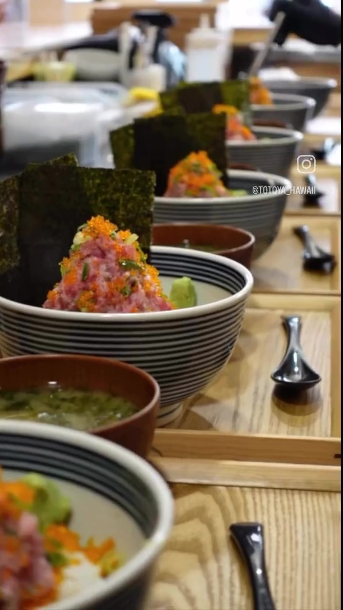

The bowlSimple pleasures.
Simple pleasures.
Beautiful ingredients.
Seafood, rice, and the little choices that make a bowl your own. Get to know the flavors at the heart of TOTOYA.
A closer look
Original negitoro
Our signature bowl starts with original negitoro. Choose Ume for the original, or explore the combinations in Take, Matsu, and Tokujo.
A world of toppings
Salmon roe, uni, and snow crab each bring something different to the bowl. Find a combination you love, then explore more on your next visit.
Beyond the signature
Our sashimi selection offers another way to enjoy seafood over rice. For a shared meal at home, the Kaimuki Hand-roll Set brings seafood, sushi rice, and nori together for 2–3 people.
